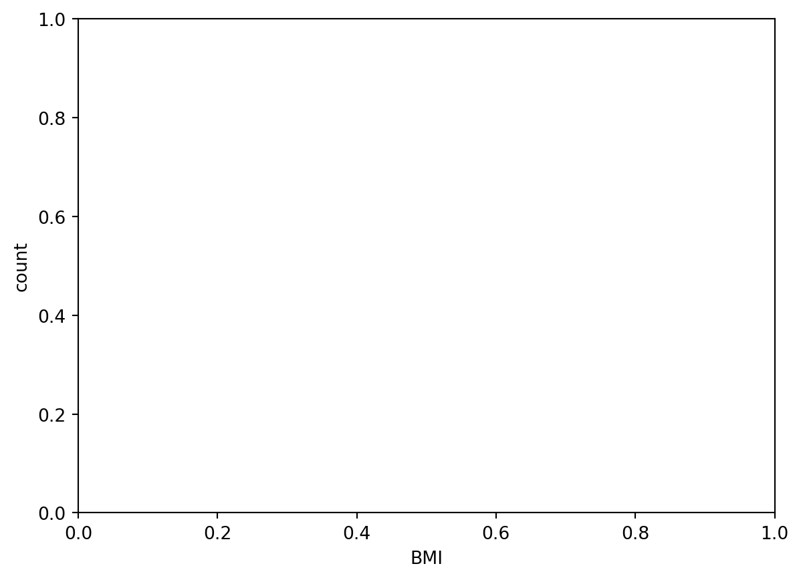
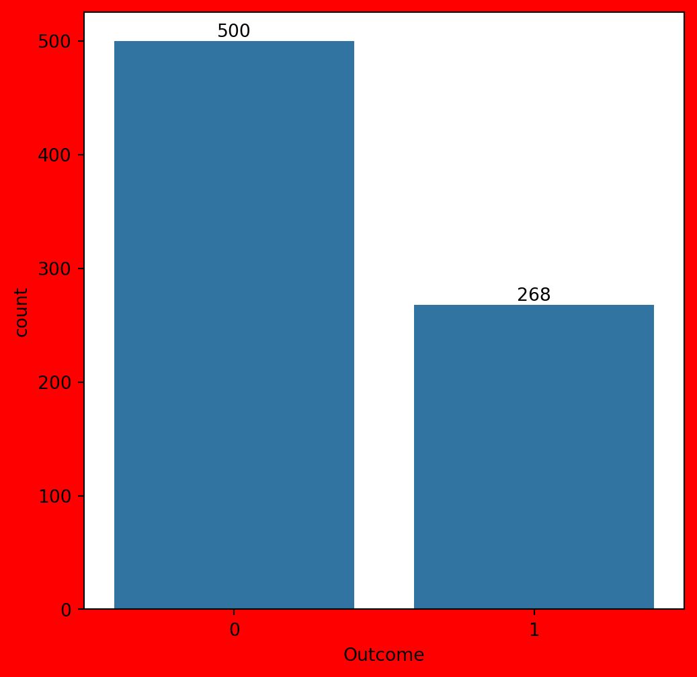
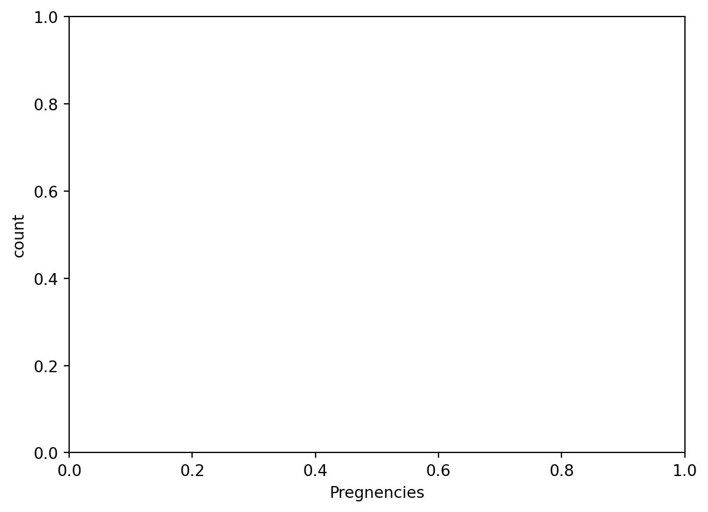
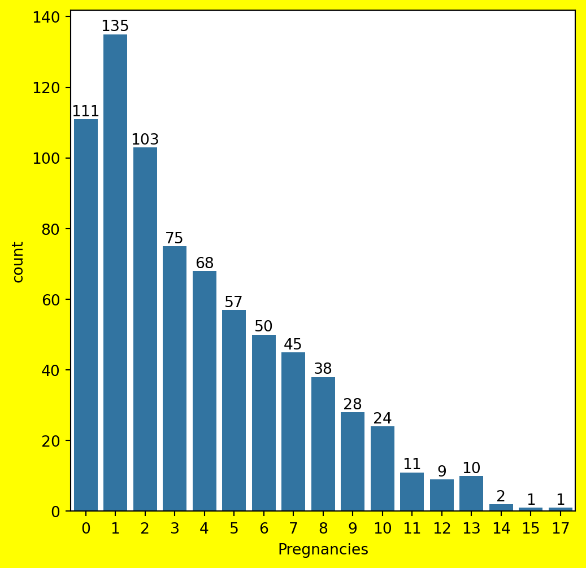
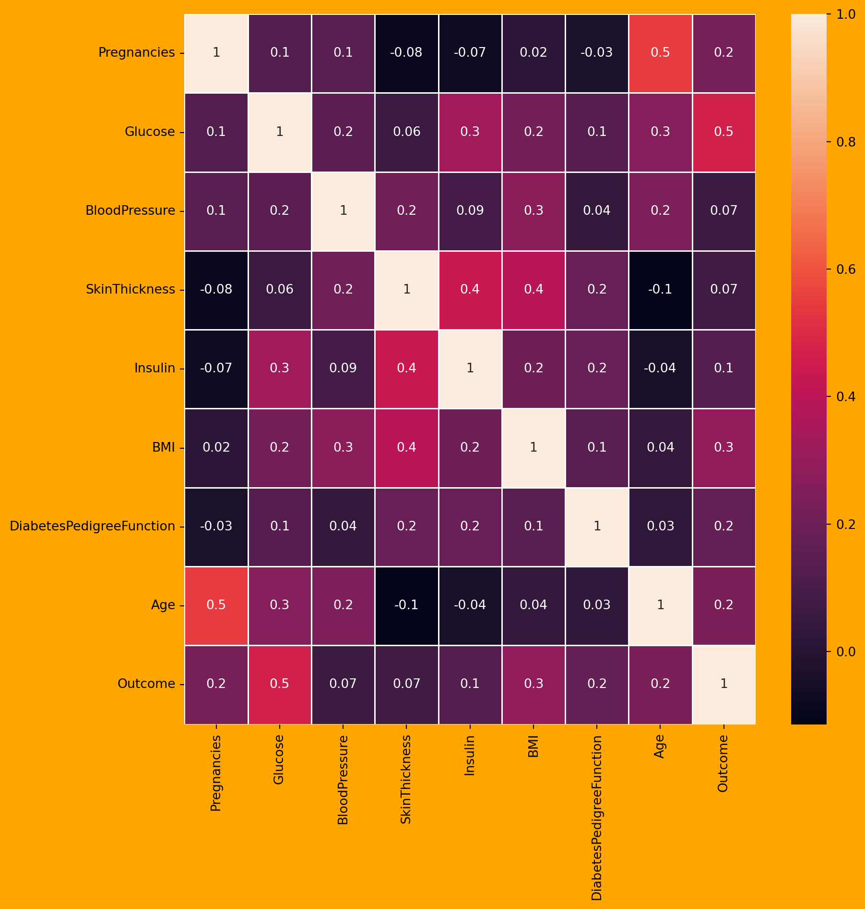

#Diabetes impacts millions globally. In this blog, we'll use Python to analyze a diabetes dataset, visualize key features, and build a predictive model with logistic regression. Join me on this journey into the data to uncover insights that could inform diabetes care and research.Gaining Insights into Diabetes with Data Science
Introduction
Exploring the Dataset
import pandas as pd
import numpy as np
import matplotlib.pyplot as plt
import seaborn as sns
from sklearn.model_selection import train_test_split
from sklearn.linear_model import LogisticRegression
df=pd.read_csv("diabetes.csv")
df.head()
df.info()
df.describe(include='all')
print('Duplication')
df.duplicated().sum()
df.isnull().sum()<class 'pandas.core.frame.DataFrame'>
RangeIndex: 768 entries, 0 to 767
Data columns (total 9 columns):
# Column Non-Null Count Dtype
--- ------ -------------- -----
0 Pregnancies 768 non-null int64
1 Glucose 768 non-null int64
2 BloodPressure 768 non-null int64
3 SkinThickness 768 non-null int64
4 Insulin 768 non-null int64
5 BMI 768 non-null float64
6 DiabetesPedigreeFunction 768 non-null float64
7 Age 768 non-null int64
8 Outcome 768 non-null int64
dtypes: float64(2), int64(7)
memory usage: 54.1 KB
DuplicationPregnancies 0
Glucose 0
BloodPressure 0
SkinThickness 0
Insulin 0
BMI 0
DiabetesPedigreeFunction 0
Age 0
Outcome 0
dtype: int64#Exploratory Data Analysisplt.xlabel("BMI")
plt.ylabel('count')
plt.figure(figsize=(6,6),facecolor='red',edgecolor='black',clear=False)
a=sns.countplot(x=df['Outcome'],data=df)
for ax in a.containers:
a.bar_label(ax)

#Pregnencies countplt.xlabel("Pregnencies")
plt.ylabel('count')
plt.figure(figsize=(6,6),facecolor='yellow',edgecolor='black',clear=False)
b=sns.countplot(x=df['Pregnancies'],data=df)
for ax1 in b.containers:
b.bar_label(ax1)

#from the observation we can tell that many women have only 1 pregnency plt.xlabel(“Outcome”) plt.ylabel(‘Pregnency’) plt.figure(figsize=(6,6),facecolor=‘orange’,edgecolor=‘black’,clear=False) c=sns.barplot(x=df[‘Outcome’],y=df[‘Pregnancies’],data=df) for ax in c.containers: c.bar_label(ax)
::: {.cell execution_count=8}
``` {.python .cell-code}
df=pd.read_csv("diabetes.csv")
df
plt.figure(figsize=(10,10),facecolor='orange',edgecolor='Black',clear=True)
a=sns.heatmap(df.corr(),annot=True,fmt='.1g',linewidths=0.5)
a<Axes: >
:::
X=df.drop('Outcome',axis=1)
Y=df.Outcome
X
Y
X_train,X_test,Y_train,Y_test=train_test_split(X,Y,test_size=0.2)
X_train
X_test
Y_train
Y_test162 0
24 1
745 0
126 0
347 0
..
161 0
465 0
149 0
545 1
298 1
Name: Outcome, Length: 154, dtype: int64import warnings
warnings.filterwarnings("ignore")
lr=LogisticRegression()
lr.fit(X_train,Y_train)
lr.predict(X_test)
lr.predict([[1,200,100,20,200,28,0.3,30]])
lr.score(X_test,Y_test)
lr.predict_proba(X_test)
lr.coef_
lr.intercept_array([-8.20523468])Conclusion
#This exploration shows how data science techniques like visualization and modeling can unlock insights from diabetes data. There are many opportunities to further analyze this data and extract meaningful patterns to inform care and quality of life.